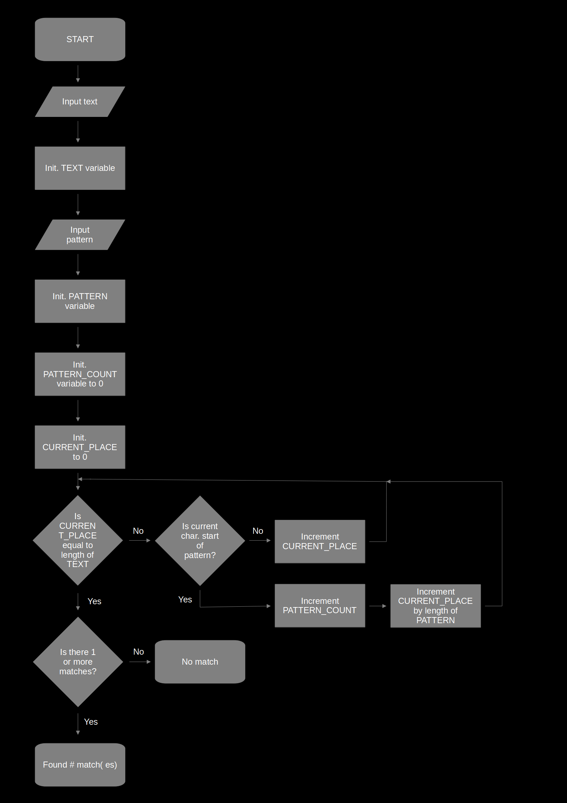
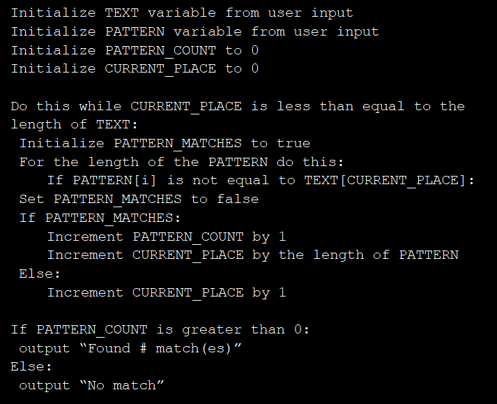
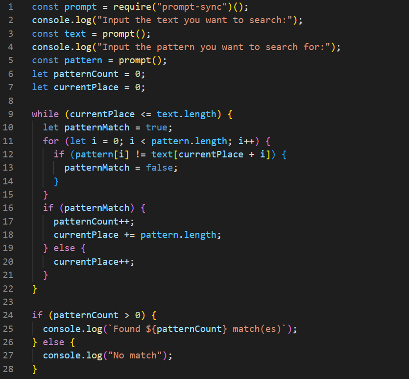

My Journey Through Codecademy's Software Development Concepts Project
As part of the course Introduction to IT on Codecademy, one has to do a portfolio/kanban project. The mission was to design a pattern-searching algorithm. Since the course didn't assume familiarity with any programming language, the final step was writing pseudocode. But, since I could, I made a fully functional React app.
The Outline
The first step was outlining the algorithm. Here is the list I made:
- Initialize text variable (from user input)
- Initialize pattern variable (from user input)
- Initialize patternCount variable to 0
- Initialize currentPlace variable to 0
- Loop through the text looking for the pattern, do not use RegEx
- If the pattern is found notify the user of the quantity
- If the pattern is not found output: "No match"
The Flowchart
The next step was to make a flowchart, the original was made with pencil and paper, but I also made a version digitally:
The Pseudocode
The final step of the portfolio project was to create pseudocode from the flowchart. The following is my attempt to translate it:
The Code
To test the algorithm, before I spent time on the user interface, I made a Node version. Although there would be some adjustments to make with the script, going from Node to React would not present much more additional work. With the pseudocode to guide me, I made this:
After manually testing that it worked, I called on create-react-app to make a React template for me.
The first task was to create a logo/favicon. I made it quickly using Gimp, and I converted the finished product using InkScape into an SVG file for the logo.
Secondly, I changed the template-given CSS in order to make the visuals more to my liking. As a user, my eyes loathe staring at a mostly white screen. So, when I'm in charge, I prefer to make a dark theme. And that's what I did this time too.
Afterward, I moved on to retrofit the script to work in the React ecosystem. Maybe not so surprisingly, I needed to use both useState and handleChange to make it work inside the App. Since it was such a tiny app, I didn't see the need to split the App function into a presentational and a container component. If you want to see the code in question it is on my GitHub page.
Conclusion
I spent more time than I needed, but that was my choice. I wanted to get more familiar with React, and I did (to a small degree). The flowchart was quick to draft, and with an eraser, some tape, and scissors it was manageable to make edits. However, after making the flowchart, the pseudocode was a time-waster, in my case. Granted, using this method, I found that I had to make another loop and another variable (PATTERN_MATCHES). But that is something I would have realized writing the actual code. Why write pseudocode when I could as easily (and more proficiently) write the actual code? I can see pseudocode being useful if you have to make different versions of the program, or if you need to communicate across different programming languages.